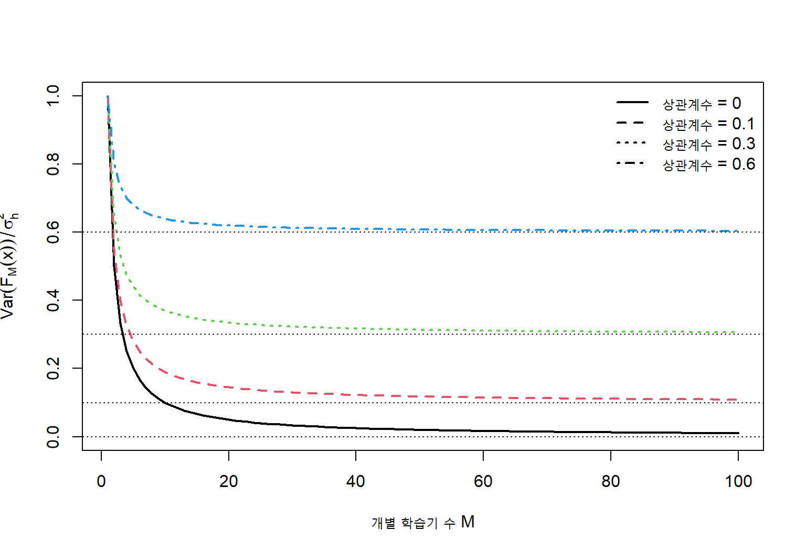
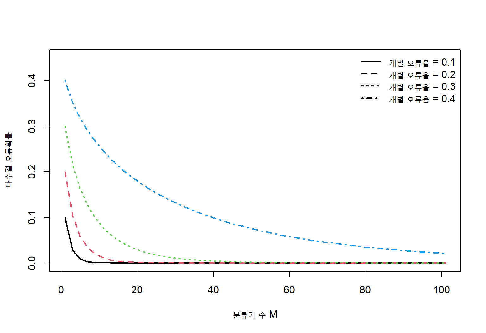
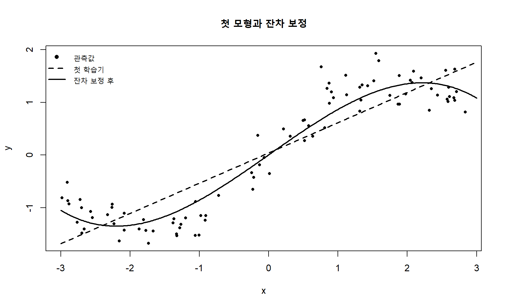
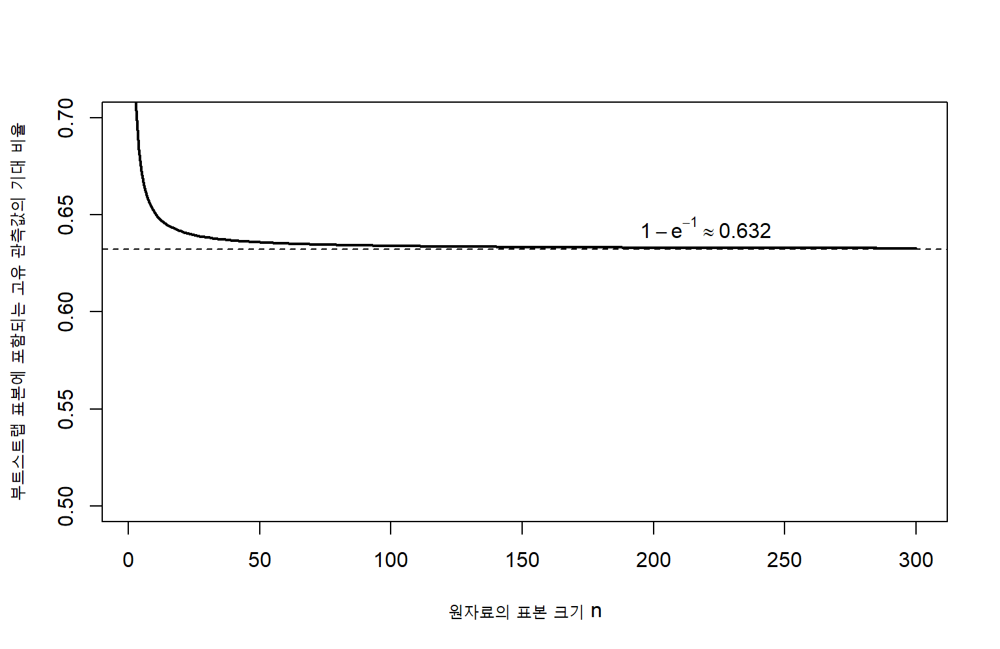
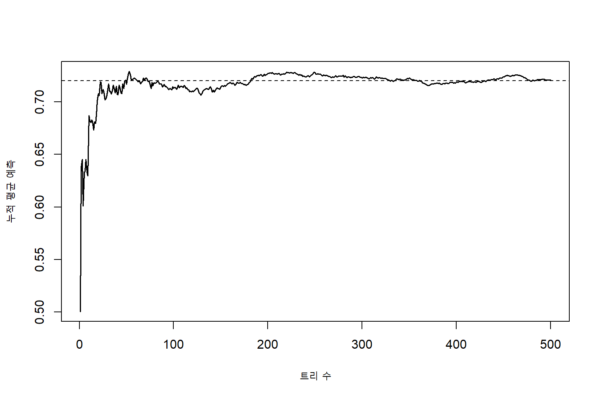
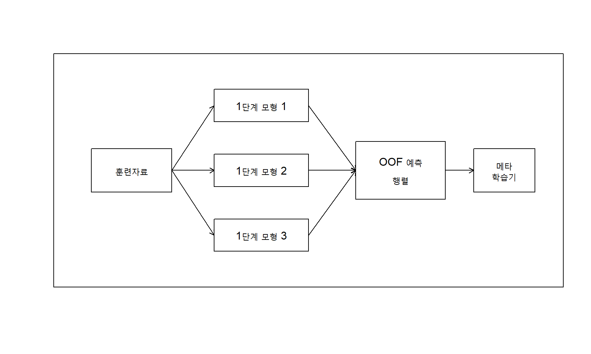
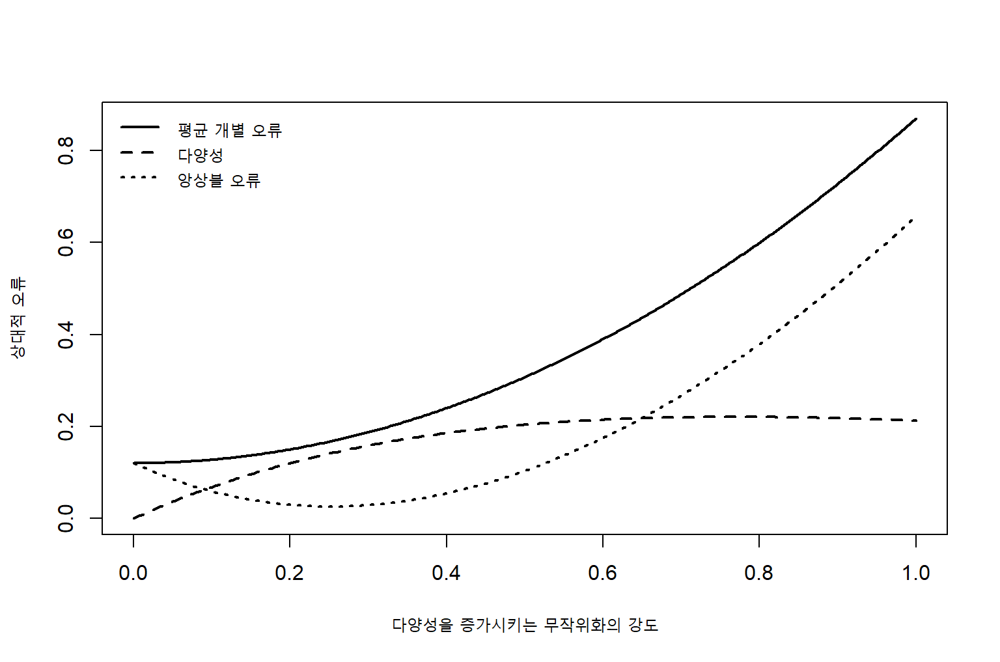

8 앙상블 학습
앙상블 학습(ensemble learning)은 여러 개의 학습기를 결합하여 하나의 예측모형을 만드는 방법이다. 개별 학습기의 예측이 완벽하지 않더라도 서로 다른 오류를 보인다면, 이들을 적절히 결합함으로써 단일 학습기보다 안정적이고 정확한 예측을 얻을 수 있다. 현대 머신러닝에서 높은 예측성능을 보이는 랜덤 포레스트(random forest), 그래디언트 부스팅, 스태킹은 모두 앙상블 원리에 기반한다.
훈련자료를
\[ \mathcal D = \{(\mathbf x_i,y_i)\}_{i=1}^{n} \tag{8.1}\]
라고 하자. \(M\)개의 개별 학습기(base learner 또는 component learner)를
\[ h_1(\mathbf x),\ldots,h_M(\mathbf x) \tag{8.2}\]
라고 하면, 회귀문제에서 가장 단순한 앙상블은 평균으로 정의된다.
\[ F_M(\mathbf x) = \frac{1}{M} \sum_{m=1}^{M} h_m(\mathbf x) \tag{8.3}\]
가중평균을 사용하면
\[ F_M(\mathbf x) = \sum_{m=1}^{M}\alpha_m h_m(\mathbf x), \qquad \alpha_m\geq 0, \qquad \sum_{m=1}^{M}\alpha_m=1 \tag{8.4}\]
로 나타낼 수 있다. 분류문제에서는 다수결(majority voting), 클래스 확률의 평균, 점수의 가중합 등을 사용할 수 있다.
중요앙상블의 핵심 원리
앙상블의 성능은 단순히 학습기의 수로 결정되지 않는다. 각 개별 학습기가 어느 정도의 예측력을 가져야 하며, 동시에 학습기들이 서로 다른 오류를 보여야 한다. 따라서 앙상블 학습의 핵심은 정확성과 다양성(diversity)을 함께 확보하는 데 있다.
이 장에서는 먼저 개별 학습기와 앙상블의 관계를 살펴보고, 순차적 결합의 대표적 방법인 부스팅, 병렬적 결합의 대표적 방법인 배깅과 랜덤 포레스트를 설명한다. 이어 다양한 결합 전략과 앙상블 다양성의 측정 및 제어 방법을 다룬다.
8.1 개별 학습기와 앙상블
8.1.1 앙상블 학습의 기본 생각
한 명의 전문가보다 서로 다른 관점을 가진 여러 전문가의 의견을 종합하는 것이 더 나은 결정을 만들 수 있다. 앙상블 학습도 같은 원리를 사용한다. 다만 모든 전문가가 동일한 실수를 반복한다면 의견을 합쳐도 성능이 향상되지 않는다. 따라서 앙상블은 다음 두 조건을 필요로 한다.
- 각 학습기가 무작위 추측보다 나은 예측력을 가져야 한다.
- 학습기들의 오류가 완전히 동일하지 않아야 한다.
이진분류에서 개별 학습기 \(h_m(\mathbf x)\in\{-1,+1\}\)가 출력한다고 하자. 다수결 앙상블은
\[ H(\mathbf x) = \operatorname{sign} \left \{ \sum_{m=1}^{M}h_m(\mathbf x) \right\} \tag{8.5}\]
로 정의된다. 가중 다수결은
\[ H(\mathbf x) = \operatorname{sign} \left \{ \sum_{m=1}^{M}\alpha_m h_m(\mathbf x) \right\} \tag{8.6}\]
이다. 성능이 좋은 학습기에 더 큰 가중치를 부여하거나, 검증자료에서 최적의 가중치를 선택할 수 있다.
8.1.2 동질적 앙상블과 이질적 앙상블
앙상블은 개별 학습기의 종류에 따라 두 가지로 구분할 수 있다.
- 동질적 앙상블(homogeneous ensemble): 같은 종류의 알고리즘을 서로 다른 자료, 변수, 난수 또는 하이퍼파라미터로 학습한다. 배깅, 랜덤 포레스트와 그래디언트 부스팅이 대표적이다.
- 이질적 앙상블(heterogeneous ensemble): 선형모형, 트리, 서포트 벡터 머신, 신경망처럼 서로 다른 알고리즘을 결합한다. 스태킹과 슈퍼러너가 대표적이다.
동질적 앙상블은 학습과 해석이 비교적 단순하고 계산을 병렬화하기 쉽다. 이질적 앙상블은 모형별 귀납적 편향이 다르므로 더 큰 다양성을 얻을 수 있지만, 결합과 검증이 복잡해진다.
8.1.3 병렬적 앙상블과 순차적 앙상블
개별 학습기의 생성방식에 따라 앙상블을 병렬적 방법과 순차적 방법으로 나눌 수 있다.
| 구분 | 개별 학습기의 관계 | 대표 방법 | 주요 목적 |
|---|---|---|---|
| 병렬적 앙상블 | 서로 독립적 또는 조건부 독립적으로 학습 | 배깅, 랜덤 포레스트 | 분산 감소 |
| 순차적 앙상블 | 앞 학습기의 오류를 다음 학습기가 보완 | AdaBoost, 그래디언트 부스팅 | 편향 감소와 어려운 사례 보완 |
| 계층적 앙상블 | 1단계 예측을 상위 모형이 다시 결합 | 스태킹, 혼합 전문가 | 서로 다른 모형의 장점 결합 |
병렬적 방법은 여러 학습기를 동시에 학습할 수 있으므로 계산 효율성이 높다. 순차적 방법은 이전 단계의 잔차나 오분류 사례를 이용하므로 단계별 의존성이 존재한다.
8.1.4 평균화와 분산 감소
회귀문제에서 \(M\)개의 예측치가 동일한 분산 \(\sigma_h^2\)를 가지며, 서로 다른 두 학습기의 상관계수가 모두 \(\rho\)라고 하자. 앙상블 평균의 분산은
이다. \(M\)이 커지면 두 번째 항은 0에 가까워지지만 첫 번째 항은 남는다.
\[ \lim_{M\to\infty} \operatorname{Var}\{F_M(\mathbf x)\} = \rho\sigma_h^2 \tag{8.8}\]
따라서 학습기의 수를 늘리는 것만으로는 충분하지 않다. 학습기 사이의 상관을 낮추는 것이 중요하다. 랜덤 포레스트가 각 노드에서 일부 변수만 무작위로 선택하는 이유도 트리 사이의 상관을 낮추기 위해서다.
그림 8.1에서 학습기 사이의 상관이 낮을수록 평균화에 따른 분산 감소가 크다. 상관이 높으면 학습기의 수를 크게 늘려도 분산 감소가 제한적이다.
8.1.5 다수결의 오류확률
\(M\)개의 이진분류기가 서로 독립이고, 각 분류기의 오류확률이 \(p<0.5\)라고 하자. \(M\)이 홀수일 때 다수결 앙상블의 오류확률은
\[ P_{\mathrm{ens}} = \sum_{k=(M+1)/2}^{M} {M\choose k} p^k(1-p)^{M-k} \tag{8.9}\]
이다. 독립성과 동일한 오류확률이라는 강한 가정 아래에서는 \(M\)이 증가할수록 앙상블 오류확률이 감소한다. 그러나 현실의 학습기들은 대체로 양의 상관을 가지므로 실제 개선 폭은 이론적 결과보다 작다.

8.1.6 약한 학습기와 강한 학습기
약한 학습기(weak learner)는 무작위 추측보다 약간 나은 성능을 보이는 학습기다. 이진분류에서 가중 오류율이 \(0.5\)보다 작으면 약한 학습기로 볼 수 있다. 부스팅은 여러 약한 학습기를 순차적으로 결합하여 강한 학습기를 만드는 대표적인 방법이다.
그러나 실제 앙상블에서 항상 약한 학습기만 사용해야 하는 것은 아니다. 랜덤 포레스트는 가지치기하지 않은 깊은 트리를 사용하고, 스태킹은 성능이 높은 여러 복잡한 모형을 결합한다. 중요한 것은 개별 학습기의 절대적 복잡도보다 앙상블 안에서의 정확성과 상호보완성이다.
8.1.7 앙상블 마진
이진분류에서 실제 레이블을 \(y_i\in\{-1,+1\}\)이라 하고, 가중 투표함수를
\[ F(\mathbf x) = \sum_{m=1}^{M}\alpha_m h_m(\mathbf x) \tag{8.10}\]
라고 하자. 관측값 \(i\)의 마진은
\[ \operatorname{margin}_i = y_i F(\mathbf x_i) \tag{8.11}\]
로 정의한다. 마진이 양수이면 정분류, 음수이면 오분류다. 마진의 절댓값이 클수록 앙상블의 판정이 강하다. 다중분류에서는 실제 클래스의 투표점수와 가장 높은 경쟁 클래스의 투표점수 차이로 마진을 정의할 수 있다.
부스팅의 일반화 성능은 단순한 훈련오류뿐 아니라 전체 관측값의 마진분포와 관련된다. 이미 정분류된 사례라도 작은 마진을 가지면 불안정한 사례이며, 부스팅은 이러한 사례의 마진을 높이는 방향으로 작동한다.
8.1.8 앙상블에서 무작위성의 역할
앙상블의 다양성은 여러 종류의 무작위성을 통해 만들어진다.
- 관측값을 다시 추출하는 무작위성: 부트스트랩, 서브샘플링
- 변수를 다시 추출하는 무작위성: 랜덤 서브스페이스, 랜덤 포레스트
- 모형 자체의 무작위성: 초기값, 노드 후보, 확률적 최적화
- 하이퍼파라미터의 다양화: 깊이, 규제강도, 학습률
- 자료변환의 다양화: 서로 다른 전처리, 특성공학, 데이터 증강
무작위성은 개별 모형의 성능을 일부 낮출 수 있지만, 모형 사이의 상관을 더 크게 낮춘다면 최종 앙상블 성능을 향상시킨다.
8.2 부스팅
8.2.1 부스팅의 기본 원리
부스팅(boosting)은 여러 개의 학습기를 순차적으로 학습하면서 이전 단계에서 잘 예측하지 못한 사례를 다음 단계가 집중적으로 보완하도록 하는 방법이다. 최종 예측은 단계별 학습기의 가중합이다.
\[ F_M(\mathbf x) = \sum_{m=1}^{M}\alpha_m h_m(\mathbf x) \tag{8.12}\]
각 단계에서 새로운 학습기 \(h_m\)은 기존 앙상블 \(F_{m-1}\)이 충분히 설명하지 못한 부분을 학습한다. 부스팅은 다음 두 관점으로 이해할 수 있다.
- 오분류된 관측값의 가중치를 증가시키는 재가중 관점
- 손실함수를 함수공간에서 단계적으로 최소화하는 가법모형 관점
AdaBoost는 첫 번째 관점을 대표하고, 그래디언트 부스팅은 두 번째 관점을 일반화한다.
8.2.2 AdaBoost의 자료 가중치
이진분류에서 \(y_i\in\{-1,+1\}\)이라 하자. 각 관측값에 초기 가중치를 동일하게 부여한다.
\[ w_i^{(1)} = \frac{1}{n}, \qquad i=1,\ldots,n \tag{8.13}\]
\(m\)번째 단계에서 가중자료를 이용하여 분류기 \(h_m\)을 학습하고, 가중 오분류율을 계산한다.
\[ \varepsilon_m = \frac{ \sum_{i=1}^{n}w_i^{(m)}I\{y_i\neq h_m(\mathbf x_i)\} }{ \sum_{i=1}^{n}w_i^{(m)} } \tag{8.14}\]
분류기 가중치는
\[ \alpha_m = \frac{1}{2} \log \left( \frac{1-\varepsilon_m}{\varepsilon_m} \right) \tag{8.15}\]
로 정한다. \(\varepsilon_m<0.5\)이면 \(\alpha_m>0\)이며, 오류율이 작을수록 더 큰 가중치를 받는다.
관측값 가중치는
\[ w_i^{(m+1)} = \frac{ w_i^{(m)} \exp\{-\alpha_m y_i h_m(\mathbf x_i)\} }{Z_m} \tag{8.16}\]
로 갱신한다. 여기서 \(Z_m\)은 가중치의 합이 1이 되도록 하는 정규화 상수다. 정분류된 관측값은 \(y_i h_m(\mathbf x_i)=1\)이므로 가중치가 감소하고, 오분류된 관측값은 \(y_i h_m(\mathbf x_i)=-1\)이므로 가중치가 증가한다.
최종 분류기는
\[ H_M(\mathbf x) = \operatorname{sign} \left\{ \sum_{m=1}^{M}\alpha_m h_m(\mathbf x) \right\} \tag{8.17}\]
이다.
노트AdaBoost 알고리즘
- 모든 관측값에 동일한 초기 가중치를 부여한다.
- 현재 가중치로 약한 학습기를 적합한다.
- 가중 오분류율로 학습기 가중치 \(\alpha_m\)을 계산한다.
- 오분류 사례의 자료 가중치를 증가시킨다.
- 정해진 반복 횟수까지 2–4단계를 반복한다.
- 학습기 예측의 가중 다수결로 최종 클래스를 결정한다.
8.2.3 AdaBoost와 지수손실
AdaBoost는 지수손실(exponential loss)
\[ L\{y,F(\mathbf x)\} = \exp\{-yF(\mathbf x)\} \tag{8.18}\]
을 단계적으로 최소화하는 가법모형으로 해석할 수 있다. \(m\)번째 단계에서는 기존 모형 \(F_{m-1}\)에 새로운 항 \(\alpha h\)를 추가한다.
\[ (\alpha_m,h_m) = \arg\min_{\alpha,h} \sum_{i=1}^{n} \exp \left[ -y_i \{F_{m-1}(\mathbf x_i)+\alpha h(\mathbf x_i)\} \right] \tag{8.19}\]
기존 모형에 따른 가중치를
\[ w_i^{(m)} = \exp\{-y_iF_{m-1}(\mathbf x_i)\} \tag{8.20}\]
로 두면 목적함수는
\[ \sum_{i=1}^{n} w_i^{(m)} \exp\{-\alpha y_i h(\mathbf x_i)\} \tag{8.21}\]
가 된다. 따라서 잘못 분류되어 마진이 작은 관측값은 더 큰 가중치를 가진다.
고정된 \(h_m\)에 대해 목적함수를 최소화하면 방정식 8.15의 \(\alpha_m\)을 얻는다. 이 결과는 자료 재가중 규칙과 지수손실 최소화가 동일한 알고리즘을 유도한다는 것을 보여준다.
8.2.4 훈련오류의 상한
AdaBoost의 경험적 분류오류는 지수손실로 상계할 수 있다.
\[ \frac{1}{n} \sum_{i=1}^{n} I\{y_iF_M(\mathbf x_i)\leq 0\} \leq \frac{1}{n} \sum_{i=1}^{n} \exp\{-y_iF_M(\mathbf x_i)\} \tag{8.22}\]
가중치 정규화 상수 \(Z_m\)을 사용하면
\[ \frac{1}{n} \sum_{i=1}^{n} \exp\{-y_iF_M(\mathbf x_i)\} = \prod_{m=1}^{M}Z_m \tag{8.23}\]
이고, 이진분류에서
\[ Z_m = 2\sqrt{\varepsilon_m(1-\varepsilon_m)} \tag{8.24}\]
이다. 모든 단계에서 \(\varepsilon_m<0.5\)이면 \(Z_m<1\)이므로 훈련오류의 상한이 반복적으로 감소한다.
8.2.5 AdaBoost의 마진 관점
AdaBoost는 훈련오류가 0이 된 뒤에도 학습을 계속할 때가 있다. 이는 단순히 오분류를 없애는 것을 넘어 관측값의 마진을 증가시키기 때문이다. 정규화된 마진을
\[ \rho_i = \frac{ y_i\sum_{m=1}^{M}\alpha_m h_m(\mathbf x_i) }{ \sum_{m=1}^{M}|\alpha_m| } \tag{8.25}\]
로 정의할 수 있다. 마진분포가 오른쪽으로 이동하면 작은 자료변동에도 분류결과가 유지될 가능성이 높다.
그러나 잡음이 많거나 잘못된 레이블이 포함되어 있으면 AdaBoost가 이러한 관측값에 지나치게 큰 가중치를 부여할 수 있다. 지수손실은 큰 음의 마진에 매우 민감하므로 이상치와 레이블 오류에 취약할 수 있다.
8.2.6 다중분류 AdaBoost
클래스 수가 \(K\)일 때 SAMME 알고리즘은 학습기 가중치를
\[ \alpha_m = \log \left( \frac{1-\varepsilon_m}{\varepsilon_m} \right) + \log(K-1) \tag{8.26}\]
로 정의한다. 약한 학습기가 무작위 분류보다 좋아야 하므로
\[ \varepsilon_m < 1- rac{1}{K} \tag{8.27}\]
이 필요하다. 각 클래스에 대한 확률을 출력하는 학습기를 사용할 수 있다면 확률기반 부스팅으로 확장할 수 있다.
8.2.7 그래디언트 부스팅의 함수공간 최적화
그래디언트 부스팅은 일반적인 미분가능 손실함수에 대해 가법모형을 구축한다. 목적함수는
\[ \widehat R(F) = \sum_{i=1}^{n} L\{y_i,F(\mathbf x_i)\} \tag{8.28}\]
이다. 모수벡터가 아니라 함수 \(F\)를 최적화한다. \(m\)번째 단계에서 각 관측값의 음의 그래디언트, 즉 의사잔차(pseudo-residual)를 계산한다.
\[ r_{im} = - \left. \frac{\partial L\{y_i,F(\mathbf x_i)\}} {\partial F(\mathbf x_i)} \right|_{F=F_{m-1}} \tag{8.29}\]
새로운 학습기 \(h_m\)을 의사잔차에 적합한다.
\[ h_m = \arg\min_{h\in\mathcal H} \sum_{i=1}^{n} \{r_{im}-h(\mathbf x_i)\}^2 \tag{8.30}\]
그다음 선탐색으로 단계 크기 \(\gamma_m\)을 선택한다.
\[ \gamma_m = \arg\min_{\gamma} \sum_{i=1}^{n} L\left\{ y_i, F_{m-1}(\mathbf x_i)+\gamma h_m(\mathbf x_i) \right\} \tag{8.31}\]
그리고 학습률(learning rate) \(\nu\)를 사용하여
\[ F_m(\mathbf x) = F_{m-1}(\mathbf x) + \nu\gamma_m h_m(\mathbf x), \qquad 0<\nu\leq 1 \tag{8.32}\]
로 갱신한다.
8.2.8 제곱오차 부스팅
회귀에서 제곱오차
\[ L\{y,F(\mathbf x)\} = \frac{1}{2} \{y-F(\mathbf x)\}^2 \tag{8.33}\]
를 사용하면 음의 그래디언트는 실제 잔차와 같다.
\[ r_{im} = y_i-F_{m-1}(\mathbf x_i) \tag{8.34}\]
따라서 제곱오차 그래디언트 부스팅은 현재 모형의 잔차에 새로운 트리를 적합하고, 그 예측을 기존 모형에 더하는 과정이다.

8.2.9 로지스틱 손실 부스팅
이진분류에서 \(y_i\in\{0,1\}\)이고
\[ p_i = P(Y_i=1\mid\mathbf x_i) = \frac{1}{1+\exp\{-F(\mathbf x_i)\}} \tag{8.35}\]
라 하자. 음의 로그우도 손실은
\[ L(y_i,F_i) = -y_i\log p_i -(1-y_i)\log(1-p_i) \tag{8.36}\]
이다. 이때 음의 그래디언트는
\[ r_{im} = y_i-p_i^{(m-1)} \tag{8.37}\]
이 된다. 따라서 각 단계는 관측 레이블과 현재 예측확률의 차이를 학습한다.
다중분류에서는 클래스별 점수함수 \(F_k(\mathbf x)\)와 소프트맥스 확률을 사용한다.
\[ p_k(\mathbf x) = \frac{\exp\{F_k(\mathbf x)\}} {\sum_{\ell=1}^{K}\exp\{F_\ell(\mathbf x)\}} \tag{8.38}\]
8.2.10 트리 기반 그래디언트 부스팅
그래디언트 부스팅에서 가장 널리 사용되는 개별 학습기는 얕은 회귀트리다. \(m\)번째 트리가 입력공간을 \(J_m\)개의 영역 \(R_{jm}\)으로 나누면
\[ h_m(\mathbf x) = \sum_{j=1}^{J_m} b_{jm}I(\mathbf x\in R_{jm}) \tag{8.39}\]
로 나타낼 수 있다. 각 말단노드의 갱신값은
\[ \gamma_{jm} = \arg\min_{\gamma} \sum_{\mathbf x_i\in R_{jm}} L\left\{ y_i, F_{m-1}(\mathbf x_i)+\gamma \right\} \tag{8.40}\]
로 결정한다. 최종 갱신은
\[ F_m(\mathbf x) = F_{m-1}(\mathbf x) + \nu \sum_{j=1}^{J_m} \gamma_{jm}I(\mathbf x\in R_{jm}) \tag{8.41}\]
이다.
트리 깊이는 상호작용의 차수를 조절한다. 깊이 1의 결정그루터기(decision stump)는 주효과 중심의 모형을 만들고, 더 깊은 트리는 고차 상호작용을 표현한다.
8.2.11 학습률과 트리 수
학습률 \(\nu\)가 작으면 각 트리의 기여가 작아지므로 더 많은 트리가 필요하다. 일반적으로 작은 학습률과 충분한 트리 수의 조합은 더 안정적인 성능을 보이지만 계산량이 증가한다.
학습률과 트리 수는 독립적으로 선택하면 안 된다. 검증오차를 기준으로 두 하이퍼파라미터를 함께 조정해야 한다.
\[ (\widehat \nu,\widehat M) = \arg\min_{\nu,M} \widehat R_{\mathrm{validation}} \{F_{M,\nu}\} \tag{8.42}\]
조기종료는 검증오차가 더 이상 감소하지 않는 시점에서 트리 추가를 중단하는 규제방법이다.
8.2.12 확률적 그래디언트 부스팅
확률적 그래디언트 부스팅(stochastic gradient boosting)은 각 단계에서 전체 훈련자료가 아니라 무작위 부분표본을 이용하여 트리를 적합한다. \(m\)번째 단계의 부분표본 인덱스를 \(S_m\)이라 하면
\[ h_m = \arg\min_{h\in\mathcal H} \sum_{i\in S_m} \{r_{im}-h(\mathbf x_i)\}^2 \tag{8.43}\]
이다. 서브샘플링은 계산량을 줄이고 트리 사이의 상관을 낮춰 일반화 성능을 높일 수 있다. 그러나 부분표본 비율이 지나치게 작으면 각 단계의 추정이 불안정해질 수 있다.
8.2.13 2차 근사를 이용한 부스팅
현대적 트리 부스팅은 손실함수의 1차 그래디언트뿐 아니라 2차 미분을 이용한다. 현재 예측값에서
\[ g_i = \frac{\partial L(y_i,F_i)}{\partial F_i}, \qquad h_i = \frac{\partial^2 L(y_i,F_i)}{\partial F_i^2} \tag{8.44}\]
라 하면 테일러 근사에 의해 목적함수의 변화는
\[ \widetilde{\mathcal L}^{(m)} = \sum_{i=1}^{n} \left[ g_i f_m(\mathbf x_i) + \frac{1}{2}h_i f_m^2(\mathbf x_i) \right] + \Omega(f_m) \tag{8.45}\]
로 근사할 수 있다. 트리 복잡도 패널티를
\[ \Omega(f) = \gamma T + \frac{\lambda}{2} \sum_{j=1}^{T}w_j^2 \tag{8.46}\]
로 두면 말단노드 수 \(T\)와 노드 점수 \(w_j\)를 동시에 규제할 수 있다.
한 말단노드 \(j\)에 포함된 관측값 집합을 \(I_j\)라고 할 때 최적 노드 점수는
\[ w_j^\ast = - \frac{\sum_{i\in I_j}g_i} {\sum_{i\in I_j}h_i+\lambda} \tag{8.47}\]
이다. 이 결과는 현대적 그래디언트 부스팅의 분할 이득 계산에 사용된다.
8.2.14 XGBoost, LightGBM과 CatBoost의 개념적 차이
현대적 부스팅 구현은 모두 트리 기반 그래디언트 부스팅을 효율적으로 계산하지만, 자료 처리와 트리 성장방식에서 차이가 있다.
| 방법 | 핵심 특징 | 주의할 점 |
|---|---|---|
| XGBoost | 2차 근사, 명시적 규제, 희소자료 처리, 병렬 분할 탐색 | 하이퍼파라미터가 많고 깊은 트리는 과적합 가능 |
| LightGBM | 히스토그램 기반 분할, 잎 중심 성장, 대규모 자료에 효율적 | 작은 자료에서 잎 중심 성장이 과적합을 유발할 수 있음 |
| CatBoost | 범주형 변수의 순서화된 통계량, ordered boosting | 범주형 변수 처리 원리를 이해하지 않으면 누출 가능 |
범주형 변수의 평균 타깃 인코딩은 전체 자료의 레이블을 사용하면 목표 누출을 일으킨다. CatBoost의 순서화된 처리방식은 각 관측값보다 앞선 사례만 사용하여 범주 통계량을 계산함으로써 누출과 예측편향을 줄이려 한다.
8.2.15 부스팅의 과적합과 잡음 민감성
부스팅은 훈련오류를 계속 감소시키지만 일반화오류는 어느 시점 이후 증가할 수 있다. 과적합을 제어하는 주요 수단은 다음과 같다.
- 작은 학습률
- 얕은 트리
- 행 및 열 서브샘플링
- 말단노드 최소 표본 수
- \(\ell_1\) 및 \(\ell_2\) 규제
- 조기종료
- 검증자료를 이용한 반복 횟수 선택
잡음이 많은 자료에서는 절대오차, Huber 손실, 분위수 손실처럼 이상치에 덜 민감한 손실함수를 선택할 수 있다.
8.2.16 부스팅의 확률 보정
부스팅의 점수는 분류에는 우수하지만 확률로서 완전히 보정되지 않을 수 있다. 특히 AdaBoost의 지수손실은 극단적인 점수를 만들 수 있다. 확률예측이 중요한 경우 검증자료에서 Platt scaling, 등위회귀 또는 베타 보정을 적용할 수 있다.
보정은 반드시 학습과 분리된 자료 또는 교차검증의 외부 예측값을 사용해야 한다. 동일한 자료로 부스팅 모형과 보정모형을 함께 적합하면 과도하게 낙관적인 확률이 만들어질 수 있다.
8.3 배깅과 랜덤 포레스트
8.3.1 부트스트랩 집계
배깅(bagging)은 bootstrap aggregating의 줄임말이다. 원자료 \(\mathcal D\)에서 크기 \(n\)의 부트스트랩 표본
\[ \mathcal D^{\ast 1},\ldots,\mathcal D^{\ast M} \tag{8.48}\]
을 생성하고, 각 표본에 학습기 \(h_m\)을 적합한다. 회귀에서는 평균
\[ F_{\mathrm{bag}}(\mathbf x) = \frac{1}{M} \sum_{m=1}^{M}h_m(\mathbf x) \tag{8.49}\]
을 사용하고, 분류에서는 다수결 또는 클래스 확률의 평균을 사용한다.
배깅은 자료의 작은 변화에 민감한 불안정 학습기에서 특히 효과적이다. 깊은 의사결정 트리는 훈련자료가 조금만 변해도 상위 분할과 전체 구조가 크게 바뀌므로 배깅에 적합하다. 반면 선형회귀처럼 안정적인 학습기는 배깅의 이득이 상대적으로 작다.
8.3.2 부트스트랩 표본에 포함되는 관측값
크기 \(n\)의 자료에서 복원추출로 \(n\)개를 선택할 때 특정 관측값이 한 번도 선택되지 않을 확률은
\[ \left(1-\frac{1}{n}\right)^n \tag{8.50}\]
이다. \(n\)이 커지면
\[ \left(1-\frac{1}{n}\right)^n \longrightarrow e^{-1} \approx 0.368 \tag{8.51}\]
이다. 따라서 하나의 부트스트랩 표본에는 원자료의 서로 다른 관측값 중 약
\[ 1-e^{-1} \approx 0.632 \tag{8.52}\]
가 포함된다. 나머지 약 36.8%는 해당 학습기의 out-of-bag 관측값이다.

8.3.3 배깅의 분산 감소 해석
자료 \(\mathcal D\)에서 학습된 예측기를 \(\widehat f(\mathbf x;\mathcal D)\)라고 하자. 이상적인 배깅 예측기는 부트스트랩 자료생성에 대한 기대값이다.
\[ f_{\mathrm{bag}}(\mathbf x) = E_{\ast} \left[ \widehat f(\mathbf x;\mathcal D^\ast) \mid\mathcal D \right] \tag{8.53}\]
실제 배깅은 유한한 \(M\)개의 부트스트랩 학습기를 사용하여 이 기대값을 몬테카를로 평균으로 근사한다.
\[ \widehat f_{\mathrm{bag},M}(\mathbf x) = \frac{1}{M} \sum_{m=1}^{M} \widehat f(\mathbf x;\mathcal D^{\ast m}) \tag{8.54}\]
평균화는 분산을 감소시키지만 편향을 반드시 줄이지는 않는다. 깊은 트리는 낮은 편향과 높은 분산을 가지므로 배깅이 분산을 줄이는 데 특히 효과적이다.
8.3.4 Out-of-bag 오차
관측값 \(i\)가 포함되지 않은 부트스트랩 학습기의 집합을
\[ \mathcal M_i^{\mathrm{OOB}} = \{m:i\notin\mathcal D^{\ast m}\} \tag{8.55}\]
라고 하자. 회귀의 OOB 예측은
\[ \widehat y_i^{\mathrm{OOB}} = \frac{1}{|\mathcal M_i^{\mathrm{OOB}}|} \sum_{m\in\mathcal M_i^{\mathrm{OOB}}} h_m(\mathbf x_i) \tag{8.56}\]
이다. 분류에서는 OOB 학습기의 다수결 또는 확률평균(probability averaging)을 사용한다. OOB 오차는
\[ \widehat R_{\mathrm{OOB}} = \frac{1}{n} \sum_{i=1}^{n} L\{y_i,\widehat y_i^{\mathrm{OOB}}\} \tag{8.57}\]
로 계산한다.
OOB 오차는 별도의 검증자료를 만들지 않고 일반화오차를 추정할 수 있다는 장점이 있다. 그러나 하이퍼파라미터를 OOB 오차로 반복적으로 선택한 뒤 동일한 OOB 오차를 최종 성능으로 보고하면 선택 편향이 생길 수 있다. 엄격한 최종 평가에는 독립 시험자료나 중첩 교차검증이 필요하다.
8.3.5 랜덤 포레스트의 무작위 변수 선택
배깅된 트리들이 강한 예측변수에 반복적으로 의존하면 트리 사이의 상관이 높아질 수 있다. 랜덤 포레스트는 각 노드에서 전체 \(p\)개 변수 중 무작위로 선택한 \(m_{\mathrm{try}}\)개 변수만 분할 후보로 사용한다.
\(m_{\mathrm{try}}\)가 작아지면 트리 사이의 상관은 감소하지만 개별 트리의 예측력도 약해질 수 있다. 따라서 랜덤 포레스트의 성능은 개별 트리의 강도와 트리 간 상관의 균형으로 결정된다.
중요랜덤 포레스트의 두 가지 무작위화
랜덤 포레스트는 관측값의 부트스트랩 추출과 노드별 변수의 무작위 추출을 함께 사용한다. 첫 번째 무작위화는 자료의 다양성을 만들고, 두 번째 무작위화는 강한 변수에 의해 모든 트리가 비슷해지는 것을 방지한다.
8.3.6 랜덤 포레스트 알고리즘
랜덤 포레스트의 기본 절차는 다음과 같다.
- 원자료에서 크기 \(n\)의 부트스트랩 표본을 추출한다.
- 현재 노드에서 \(p\)개 변수 중 \(m_{\mathrm{try}}\)개를 무작위로 선택한다.
- 선택된 변수들만 이용하여 최적 분할을 찾는다.
- 정지조건에 도달할 때까지 2–3단계를 반복하여 깊은 트리를 만든다.
- 1–4단계를 \(M\)번 반복한다.
- 회귀에서는 평균, 분류에서는 투표 또는 확률평균으로 결합한다.
분류트리는 일반적으로 지니 불순도나 엔트로피를 사용하고, 회귀트리는 잔차제곱합 감소를 사용한다.
8.3.7 트리 수와 몬테카를로 오차
랜덤 포레스트의 트리 수 \(M\)을 늘리면 과적합이 반드시 심해지는 것은 아니다. 트리가 추가될수록 앙상블 평균의 몬테카를로 오차가 감소하고, 예측은 일정한 값으로 안정화된다. 다만 계산시간과 메모리 사용량은 증가한다.
충분한 트리 수는 OOB 오차, 예측확률 또는 변수 중요도가 안정되는 시점으로 판단할 수 있다. 희귀사건 예측이나 확률분포의 꼬리를 추정할 때는 평균오차가 안정된 이후에도 더 많은 트리가 필요할 수 있다.

8.3.8 주요 하이퍼파라미터
랜덤 포레스트의 주요 하이퍼파라미터는 다음과 같다.
- 트리 수 \(M\)
- 노드별 후보 변수 수 \(m_{\mathrm{try}}\)
- 말단노드 최소 관측값 수
- 최대 깊이
- 부트스트랩 또는 서브샘플 비율
- 분할을 허용하기 위한 최소 불순도 감소
- 클래스 가중치 또는 균형표본추출 방식
작은 말단노드는 복잡한 국소구조를 표현하지만 분산이 커질 수 있다. 큰 말단노드는 예측을 평활화하고 확률 추정을 안정화한다. 회귀와 분류, 점예측과 확률예측에 따라 적절한 노드 크기가 달라질 수 있다.
8.3.9 극단 무작위 트리
극단 무작위 트리(extremely randomized trees)는 변수뿐 아니라 분할점도 무작위로 생성한 뒤 후보 중 가장 좋은 분할을 선택한다. 또한 구현에 따라 부트스트랩 없이 전체 자료를 사용할 수 있다.
분할점의 추가 무작위화는 트리 사이의 상관을 더 낮추지만 개별 트리의 편향을 증가시킬 수 있다. 자료가 크고 복잡한 상호작용이 존재할 때 계산 효율성과 일반화 성능 측면에서 유용할 수 있다.
8.3.10 랜덤 서브스페이스와 회전 포레스트
랜덤 서브스페이스(random subspace) 방법은 각 학습기에서 변수의 부분집합만 사용한다. 고차원 자료에서 변수가 많고 서로 중복된 정보를 포함할 때 효과적이다.
회전 포레스트(rotation forest)는 변수들을 여러 그룹으로 나누고 각 그룹에서 주성분 분석과 같은 변환을 수행한 뒤, 회전된 특성공간에서 트리를 학습한다. 개별 트리의 정확성을 유지하면서 서로 다른 좌표계를 제공하여 다양성을 만든다.
8.3.11 변수 중요도
랜덤 포레스트 고유의 중요도를 설명한 뒤, 모형 독립적 중요도와 설명 안정성은 ?sec-ch17-variable-importance에서 비교한다.
랜덤 포레스트에서 널리 사용되는 변수 중요도는 불순도 감소 중요도와 순열 중요도다.
불순도 감소 중요도는 변수 \(X_j\)가 사용된 모든 분할에서의 불순도 감소량을 합한다.
\[ \operatorname{Imp}_{\mathrm{MDI}}(X_j) = \frac{1}{M} \sum_{m=1}^{M} \sum_{t\in\mathcal T_m: u(t)=j} \Delta I_t \tag{8.58}\]
여기서 \(\nu(t)\)는 노드 \(t\)에서 사용한 변수이고, \(\Delta I_t\)는 해당 분할의 불순도 감소량이다.
순열 중요도(permutation importance)는 검증자료 또는 OOB 자료에서 변수 \(X_j\)의 값을 무작위로 섞은 뒤 성능이 얼마나 감소하는지 측정한다.
\[ \operatorname{Imp}_{\mathrm{perm}}(X_j) = \widehat R_{\mathrm{perm}(j)} - \widehat R_{\mathrm{original}} \tag{8.59}\]
불순도 중요도는 가능한 분할점이 많은 연속형 변수나 범주 수가 많은 변수에 유리한 편향을 가질 수 있다. 순열 중요도는 상관된 변수 사이에서 중요도가 분산되거나 대체 가능한 변수를 과소평가할 수 있다.
8.3.12 조건부 순열 중요도
변수 \(X_j\)가 다른 변수와 강하게 상관되어 있으면 단순 순열은 현실적으로 가능하지 않은 특성조합을 만들 수 있다. 조건부 순열 중요도는 관련 변수들의 값을 조건으로 유지하면서 \(X_j\)만 교란한다.
개념적으로는
\[ X_j^{\mathrm{perm}} \sim P(X_j\mid\mathbf X_{-j}) \tag{8.60}\]
에 가까운 대체값을 생성한다. 이를 통해 다른 변수에 포함된 중복정보를 통제한 조건부 기여도를 평가할 수 있다. 그러나 조건부분포를 정확히 추정해야 하므로 계산과 모형화가 더 복잡하다.
8.3.13 부분의존과 개별조건부기대
PDP와 ICE의 일반 이론과 상관된 특성에서의 대안은 ?sec-ch17-pdp-ice에서 다룬다.
랜덤 포레스트는 단일 트리보다 해석이 어렵다. 전체 모형의 평균적인 관계는 부분의존함수로 요약할 수 있다.
\[ f_j^{\mathrm{PD}}(x_j) = E_{\mathbf X_{-j}} \left[ F(x_j,\mathbf X_{-j}) \right] \tag{8.61}\]
표본평균으로는
\[ \widehat f_j^{\mathrm{PD}}(x_j) = \frac{1}{n} \sum_{i=1}^{n} F(x_j,\mathbf x_{i,-j}) \tag{8.62}\]
로 추정한다. 개별조건부기대(ICE)는 각 관측값별 곡선을 그려 이질적인 효과를 확인한다. 특성들이 강하게 상관되어 있으면 부분의존함수가 자료가 거의 없는 영역을 평가할 수 있으므로 해석에 주의해야 한다.
8.3.14 분위수 회귀 포레스트
일반 랜덤 포레스트 회귀는 조건부 평균을 추정한다. 분위수 회귀 포레스트는 새로운 입력과 같은 말단노드에 반복적으로 포함된 훈련관측값에 가중치를 부여하여 조건부분포를 추정한다.
\[ \widehat F(y\mid\mathbf x) = \sum_{i=1}^{n} w_i(\mathbf x) I(y_i\leq y) \tag{8.63}\]
여기서 \(w_i(\mathbf x)\)는 관측값 \(i\)가 새로운 입력 \(\mathbf x\)와 같은 말단노드에 포함된 빈도를 반영한다. 조건부 \(\tau\) 분위수는
\[ \widehat Q_\tau(\mathbf x) = \inf \{y:\widehat F(y\mid\mathbf x)\geq\tau\} \tag{8.64}\]
로 계산한다. 이는 예측구간과 이분산성을 비모수적으로 추정하는 데 유용하다.
8.3.15 클래스 불균형과 랜덤 포레스트
희귀 클래스가 있는 경우 부트스트랩 표본에 양성 사례가 충분히 포함되지 않을 수 있고, 다수결은 다수 클래스에 치우칠 수 있다. 다음 방법을 사용할 수 있다.
- 클래스별 균형 부트스트랩
- 비용민감 분할
- 클래스 가중 투표
- OOB 자료에서 임계값 선택
- 확률 보정 후 의사결정 비용에 따른 임계값 적용
균형표본추출은 학습분포의 클래스 비율을 바꾸므로, 모형이 출력한 확률을 실제 모집단 유병률에 맞게 보정해야 할 수 있다.
8.4 결합 전략
8.4.1 다수결과 가중 다수결
다중분류에서 개별 학습기 \(h_m\)이 클래스 레이블을 출력하면 클래스 \(k\)의 투표 수는
\[ V_k(\mathbf x) = \sum_{m=1}^{M} I\{h_m(\mathbf x)=k\} \tag{8.65}\]
이다. 최종 예측은
\[ \widehat y(\mathbf x) = \arg\max_k V_k(\mathbf x) \tag{8.66}\]
로 결정한다. 학습기별 신뢰도를 반영한 가중투표는
\[ V_k^{(w)}(\mathbf x) = \sum_{m=1}^{M} \alpha_m I\{h_m(\mathbf x)=k\} \tag{8.67}\]
이다.
가중치는 검증성능의 역오차, 로그오즈, 최적화 또는 메타학습을 통해 선택할 수 있다. 단순히 훈련성능이 높은 모형에 큰 가중치를 부여하면 과적합된 모형이 과도한 영향력을 가질 수 있다.
8.4.2 확률평균
개별 학습기가 클래스 확률 \(\widehat p_{mk}(\mathbf x)\)를 출력하면 선형 확률풀(linear opinion pool)은
\[ \widehat p_k^{\mathrm{ens}}(\mathbf x) = \sum_{m=1}^{M} \alpha_m \widehat p_{mk}(\mathbf x) \tag{8.68}\]
로 정의한다. 모든 가중치가 비음수이고 합이 1이면 최종 확률도 유효한 확률분포다.
로그 확률풀은
\[ \widetilde p_k(\mathbf x) = \prod_{m=1}^{M} \widehat p_{mk}(\mathbf x)^{\alpha_m} \tag{8.69}\]
을 계산한 뒤 클래스 전체에 대해 정규화한다.
\[ \widehat p_k^{\mathrm{log}}(\mathbf x) = \frac{\widetilde p_k(\mathbf x)} {\sum_{\ell=1}^{K}\widetilde p_\ell(\mathbf x)} \tag{8.70}\]
선형 평균은 극단적 확률을 완화하는 경향이 있고, 로그 평균은 모든 모형이 동의하는 클래스에 더 큰 확률을 줄 수 있다. 개별 확률이 보정되지 않았다면 결합 후에도 보정이 필요하다.
8.4.3 점수와 로짓의 결합
이진분류 확률의 로짓을
\[ z_m(\mathbf x) = \log \frac{\widehat p_m(\mathbf x)} {1-\widehat p_m(\mathbf x)} \tag{8.71}\]
라고 하자. 로짓 평균은
\[ z_{\mathrm{ens}}(\mathbf x) = \beta_0 + \sum_{m=1}^{M}\beta_m z_m(\mathbf x) \tag{8.72}\]
으로 구성하고
\[ \widehat p_{\mathrm{ens}}(\mathbf x) = \frac{1}{1+\exp\{-z_{\mathrm{ens}}(\mathbf x)\}} \tag{8.73}\]
로 변환한다. 이는 개별 예측을 입력변수로 사용하는 로지스틱 메타모형과 같다.
8.4.4 스태킹
스태킹(stacking)은 여러 1단계 모형의 예측을 새로운 특성으로 사용하여 2단계 메타학습기를 적합하는 방법이다. 관측값 \(i\)에 대한 1단계 예측벡터를
\[ \mathbf z_i = \left( \widehat f_1^{(-i)}(\mathbf x_i), \ldots, \widehat f_M^{(-i)}(\mathbf x_i) \right)^\top \tag{8.74}\]
라고 하자. 위첨자 \((-i)\)는 관측값 \(i\)를 학습에 사용하지 않은 모형의 예측임을 뜻한다. 메타학습기 \(g\)는
\[ \widehat g = \arg\min_g \sum_{i=1}^{n} L\{y_i,g(\mathbf z_i)\} \tag{8.75}\]
로 학습한다. 새로운 자료에서는 각 1단계 모형을 전체 훈련자료에 다시 적합한 뒤 그 예측을 메타학습기에 입력한다.
경고스태킹에서 가장 중요한 원칙
메타학습기 훈련에는 반드시 out-of-fold 예측을 사용해야 한다. 1단계 모형이 자신을 학습한 자료에 대해 만든 적합값을 메타학습기에 사용하면 심각한 데이터 누출과 과적합이 발생한다.

8.4.5 선형 스태킹과 비음수 제약
회귀에서 선형 메타학습기를 사용하면
\[ \widehat y_i = \beta_0 + \sum_{m=1}^{M}\beta_m z_{im} \tag{8.76}\]
이다. 가중치에
\[ \beta_m\geq 0, \qquad \sum_{m=1}^{M}\beta_m=1 \tag{8.77}\]
을 부과하면 최종 예측은 개별 예측의 볼록결합이 된다. 비음수 제약은 모형의 불안정한 상쇄를 줄이고 해석을 단순화한다. 반면 음의 가중치를 허용하면 편향 보정이 가능하지만 외삽과 극단적 예측 위험이 커질 수 있다.
8.4.6 슈퍼러너
슈퍼러너(super learner)는 후보 학습기 라이브러리의 교차검증 예측을 결합하여 기대손실을 최소화하는 스태킹 방법이다. 후보 가중치 \(\boldsymbol\alpha\)에 대해
\[ \widehat{\boldsymbol\alpha} = \arg\min_{\boldsymbol\alpha\in\mathcal A} \sum_{i=1}^{n} L\left\{ y_i, \sum_{m=1}^{M}\alpha_m z_{im} \right\} \tag{8.78}\]
을 푼다. 일반적으로 \(\mathcal A\)는 비음수이고 합이 1인 단체(simplex)로 설정한다.
후보 라이브러리에는 단순모형과 복잡한 모형을 함께 포함하는 것이 좋다. 모든 후보가 비슷한 구조를 가지면 스태킹의 다양성이 제한된다.
8.4.7 블렌딩
블렌딩(blending)은 전체 훈련자료의 일부를 메타학습용 검증자료로 따로 분리한다. 1단계 모형은 나머지 자료에 적합하고, 홀드아웃 예측을 이용해 메타학습기를 학습한다.
구현이 단순하고 계산비용이 작지만, 1단계와 2단계 모두 사용할 수 있는 자료가 줄어든다. 표본이 충분히 큰 대규모 자료에서는 실용적이지만, 작은 자료에서는 교차검증 기반 스태킹이 더 효율적이다.
8.4.8 베이지안 모형 평균
후보모형을 \(\mathcal M_1,\ldots,\mathcal M_M\)이라고 하자. 베이지안 모형 평균(Bayesian model averaging)은 모형 사후확률을 가중치로 사용한다.
\[ p(y^\ast\mid\mathbf x^\ast,\mathcal D) = \sum_{m=1}^{M} p(y^\ast\mid\mathbf x^\ast,\mathcal D,\mathcal M_m) P(\mathcal M_m\mid\mathcal D) \tag{8.79}\]
여기서
\[ P(\mathcal M_m\mid\mathcal D) \propto p(\mathcal D\mid\mathcal M_m) P(\mathcal M_m) \tag{8.80}\]
이다. 베이지안 모형 평균은 모형 선택 불확실성을 예측분포에 반영한다. 그러나 후보모형의 사전확률과 주변우도 계산이 필요하며, 대규모 복잡모형에서는 근사방법이 필요하다.
8.4.9 혼합 전문가 모형
혼합 전문가 모형(mixture of experts)은 입력영역에 따라 다른 전문가의 가중치를 부여한다. 전문가 \(m\)의 예측분포를 \(p_m(y\mid\mathbf x)\), 게이팅 함수의 가중치를 \(\pi_m(\mathbf x)\)라 하면
\[ p(y\mid\mathbf x) = \sum_{m=1}^{M} \pi_m(\mathbf x) p_m(y\mid\mathbf x) \tag{8.81}\]
이고
\[ \pi_m(\mathbf x)\geq 0, \qquad \sum_{m=1}^{M}\pi_m(\mathbf x)=1 \tag{8.82}\]
이다. 스태킹의 가중치가 전체 입력공간에서 고정되어 있는 것과 달리, 혼합 전문가에서는 가중치가 입력값에 따라 달라진다.
예를 들어 선형모형은 전체적인 추세에, 트리는 비선형 상호작용에, 특수 모형은 특정 하위집단에 더 큰 가중치를 받을 수 있다.
8.4.10 동적 앙상블 선택
동적 앙상블 선택은 새로운 입력 \(\mathbf x\) 주변에서 성능이 좋은 학습기만 선택하거나 더 큰 가중치를 부여한다. 입력의 근방 \(\mathcal N(\mathbf x)\)에서 학습기 \(m\)의 국소성능을
\[ q_m(\mathbf x) = \frac{1}{|\mathcal N(\mathbf x)|} \sum_{i\in\mathcal N(\mathbf x)} I\{h_m(\mathbf x_i)=y_i\} \tag{8.83}\]
로 평가할 수 있다. 최종 예측은 \(q_m(\mathbf x)\)가 높은 학습기들의 투표로 결정한다.
국소성능 추정은 근방의 정의와 검증자료의 밀도에 민감하다. 고차원 자료에서는 거리집중 현상 때문에 신뢰할 수 있는 근방을 구성하기 어려울 수 있다.
8.4.11 결합 이후의 확률 보정
앙상블은 분류순위를 개선하더라도 확률 보정을 자동으로 보장하지 않는다. 다수결 비율은 클래스 확률과 같지 않으며, 서로 강하게 상관된 모형들의 평균은 불확실성을 과소평가할 수 있다.
확률이 의사결정에 사용될 때는 다음을 확인해야 한다.
- 교정곡선과 calibration-in-the-large
- calibration slope
- Brier score와 로그손실
- 하위집단별 보정
- 시간과 기관 변화에 따른 보정 유지
보정모형은 앙상블 학습과 분리된 자료 또는 외부 교차검증 예측을 이용해야 한다.
8.5 다양성
8.5.1 다양성이 필요한 이유
정확도가 높은 학습기 여러 개를 결합해도 이들이 동일한 사례에서 동일하게 틀리면 앙상블의 이득은 작다. 반대로 각 학습기의 성능이 다소 낮더라도 오류가 상호보완적이면 결합 후 성능이 크게 향상될 수 있다.
회귀에서 개별 오차를
\[ e_m(\mathbf x) = y-h_m(\mathbf x) \tag{8.84}\]
라고 하면 평균 앙상블의 오차는
\[ e_{\mathrm{ens}}(\mathbf x) = \frac{1}{M} \sum_{m=1}^{M}e_m(\mathbf x) \tag{8.85}\]
이다. 앙상블 제곱오차는 개별 오차의 분산과 공분산에 의해 결정된다.
\[ E(e_{\mathrm{ens}}^2) = \frac{1}{M^2} \left[ \sum_{m=1}^{M}E(e_m^2) + 2\sum_{m<\ell}E(e_m e_\ell) \right] \tag{8.86}\]
두 번째 항이 작거나 음수일수록 앙상블의 오류가 감소한다.
8.5.2 모호성 분해
회귀에서 평균 앙상블 \(F(\mathbf x)=M^{-1}\sum_m h_m(\mathbf x)\)에 대해 다음 항등식이 성립한다.
\[ \{y-F(\mathbf x)\}^2 = \frac{1}{M} \sum_{m=1}^{M} \{y-h_m(\mathbf x)\}^2 - \frac{1}{M} \sum_{m=1}^{M} \{h_m(\mathbf x)-F(\mathbf x)\}^2 \tag{8.87}\]
첫 번째 항은 개별 학습기의 평균 제곱오차이고, 두 번째 항은 앙상블 구성원 사이의 모호성 또는 다양성이다. 따라서
\[ \text{앙상블 오류} = \text{평균 개별 오류} - \text{다양성} \tag{8.88}\]
로 해석할 수 있다.
그러나 다양성을 무조건 크게 만드는 것이 목표는 아니다. 매우 부정확한 학습기를 추가하면 다양성은 증가하지만 평균 개별 오류도 더 크게 증가할 수 있다.

그림 8.7는 무작위화를 강화하면 초기에는 다양성 증가로 앙상블 오류가 감소하지만, 지나친 무작위화는 개별 학습기의 정확도를 크게 낮출 수 있음을 개념적으로 보여준다.
8.5.3 분류기 쌍의 분할표
두 분류기 \(h_a\)와 \(h_b\)의 정오분류 결과를 표 8.3와 같이 나타낼 수 있다.
| \(h_b\) 정분류 | \(h_b\) 오분류 | |
|---|---|---|
| \(h_a\) 정분류 | \(N^{11}\) | \(N^{10}\) |
| \(h_a\) 오분류 | \(N^{01}\) | \(N^{00}\) |
여기서 \(N^{10}\)과 \(N^{01}\)은 두 분류기가 서로 다른 결과를 보인 사례이고, \(N^{00}\)은 둘 다 틀린 사례다.
8.5.4 불일치(disagreement) 척도
두 분류기의 불일치 비율은
\[ \operatorname{Dis}(a,b) = \frac{N^{10}+N^{01}}{N} \tag{8.89}\]
이다. 값이 클수록 두 분류기의 예측행동이 다르다. 그러나 불일치는 정분류와 오분류를 구분하지 않으므로, 부정확한 분류기 두 개도 높은 다양성을 가질 수 있다.
8.5.5 이중 오류 척도
이중 오류(double fault)는 두 분류기가 동시에 틀리는 비율이다.
\[ \operatorname{DF}(a,b) = \frac{N^{00}}{N} \tag{8.90}\]
이 값이 작을수록 한 분류기의 오류를 다른 분류기가 보완할 가능성이 높다. 실제 앙상블 선택에서는 단순 불일치보다 이중 오류가 더 직접적인 정보를 제공할 때가 많다.
8.5.6 Q 통계량
Q 통계량(Q statistic)은 두 분류기의 정오분류 연관성을 측정한다.
\[ Q_{ab} = \frac{ N^{11}N^{00}-N^{10}N^{01} }{ N^{11}N^{00}+N^{10}N^{01} } \tag{8.91}\]
\(Q_{ab}=1\)이면 두 분류기의 정오분류 패턴이 완전히 같은 방향이고, \(Q_{ab}=-1\)이면 완전히 반대이며, 0에 가까우면 연관성이 약하다.
8.5.7 오류 상관계수
정분류 여부를 이진변수로 두면 두 분류기의 상관계수는
\[ \rho_{ab} = \frac{ N^{11}N^{00}-N^{10}N^{01} }{ \sqrt{ (N^{11}+N^{10}) (N^{01}+N^{00}) (N^{11}+N^{01}) (N^{10}+N^{00}) } } \tag{8.92}\]
로 계산된다. 평균 쌍별 상관을 낮추는 것이 배깅과 랜덤 포레스트의 핵심 목적 중 하나다.
8.5.8 비쌍별 다양성 척도
관측값 \(i\)를 올바르게 분류한 학습기의 수를 \(l_i\)라고 하자. 분산형 다양성은
\[ \operatorname{KW} = \frac{1}{nM^2} \sum_{i=1}^{n} l_i(M-l_i) \tag{8.93}\]
로 정의할 수 있다. \(l_i\)가 0이나 \(M\)에 가까우면 모든 학습기가 같은 판단을 하므로 다양성이 작다. \(l_i\)가 \(M/2\)에 가까우면 의견이 크게 나뉘므로 다양성이 크다.
엔트로피 기반 다양성은
\[ E = \frac{1}{n} \sum_{i=1}^{n} \frac{1}{M-\lceil M/2\rceil} \min\{l_i,M-l_i\} \tag{8.94}\]
처럼 정의할 수 있다. 다만 다양성 척도마다 앙상블 성능과의 관계가 다르며, 하나의 척도가 모든 문제에서 최적이라고 볼 수 없다.
8.5.9 다양성을 만드는 방법
앙상블 다양성은 다음과 같은 수준에서 만들 수 있다.
| 다양성의 원천 | 방법의 예 |
|---|---|
| 관측값 | 부트스트랩, 서브샘플링, 클래스별 표본추출 |
| 변수 | 랜덤 서브스페이스, 노드별 변수 추출, 특성군 분할 |
| 표현 | 서로 다른 변수변환, 주성분 회전, 데이터 증강 |
| 알고리즘 | 선형모형, 트리, SVM, 신경망의 혼합 |
| 하이퍼파라미터 | 깊이, 규제, 커널, 초기값의 변화 |
| 목적함수 | 서로 다른 손실함수 또는 비용행렬 |
| 최적화 | 초기값, 미니배치 순서, 학습률 스케줄 |
좋은 다양성은 무작위한 차이 자체가 아니라 예측오류의 상호보완성을 의미한다.
8.5.10 음의 상관 학습
신경망 앙상블에서는 개별 학습기를 동시에 학습하면서 다른 학습기와 비슷한 오류를 내지 않도록 패널티를 추가할 수 있다. 학습기 \(m\)의 목적함수를
\[ \mathcal L_m = \sum_{i=1}^{n} \{y_i-h_m(\mathbf x_i)\}^2 + \lambda \sum_{i=1}^{n} \{h_m(\mathbf x_i)-F(\mathbf x_i)\} \sum_{\ell\neq m} \{h_\ell(\mathbf x_i)-F(\mathbf x_i)\} \tag{8.95}\]
처럼 구성할 수 있다. 두 번째 항은 구성원들의 편차가 같은 방향으로 움직이는 것을 억제한다. \(\lambda\)가 너무 크면 개별 정확도가 크게 저하될 수 있으므로 검증이 필요하다.
8.5.11 다양성 규제를 이용한 결합
가중 앙상블에서 예측행렬을 \(\mathbf Z\in\mathbb R^{n\times M}\), 가중치를 \(\boldsymbol\alpha\)라고 하자. 회귀의 결합 가중치를 다음과 같이 추정할 수 있다.
\[ \widehat{\boldsymbol\alpha} = \arg\min_{\boldsymbol\alpha} \left[ \|\mathbf y-\mathbf Z\boldsymbol\alpha\|_2^2 + \lambda\boldsymbol\alpha^\top \mathbf C \boldsymbol\alpha \right] \tag{8.96}\]
여기서 \(\mathbf C\)는 학습기 오류의 상관 또는 유사성을 나타내는 행렬이다. 상관된 학습기들에 동시에 큰 가중치를 주는 것을 억제함으로써 정확성과 다양성을 함께 고려한다.
8.5.12 앙상블 가지치기
학습기 수가 많다고 항상 좋은 것은 아니다. 성능이 낮거나 다른 학습기와 거의 같은 예측을 하는 구성원을 제거하면 계산량을 줄이면서 성능을 유지하거나 개선할 수 있다.
앙상블 가지치기(ensemble pruning)의 목표는 후보집합 \(\{h_1,\ldots,h_M\}\)에서 부분집합 \(S\)를 선택하는 것이다.
\[ \widehat S = \arg\min_{S\subseteq\{1,\ldots,M\}} \left[ \widehat R\{F_S\} + \lambda |S| \right] \tag{8.97}\]
모든 부분집합을 탐색하는 것은 계산적으로 어렵기 때문에 다음 방법을 사용한다.
- 성능순 정렬 후 순차 추가
- 앞으로 선택 또는 뒤로 제거
- 정확도와 다양성의 결합점수
- 군집화 후 대표 학습기 선택
- 희소 가중치 추정
- 유전 알고리즘과 같은 탐색기법
8.5.13 그리디 앙상블 선택
그리디 앙상블 선택은 검증자료에서 가장 좋은 단일 모형으로 시작한 뒤, 현재 앙상블과 결합했을 때 성능을 가장 많이 개선하는 모형을 반복적으로 추가한다.
\(m\)번째 단계에서 후보 \(j\)의 결합위험을
\[ \widehat R_{m,j} = \widehat R\left\{ \frac{m-1}{m}F_{m-1} + \frac{1}{m}h_j \right\} \tag{8.98}\]
로 평가하고
\[ j_m = \arg\min_j \widehat R_{m,j} \tag{8.99}\]
를 선택한다. 같은 모형을 여러 번 선택하도록 허용하면 선택 빈도가 암묵적인 가중치 역할을 한다.
8.5.14 다양성과 공정성
앙상블은 평균 성능을 높일 수 있지만 모든 하위집단에서 동일하게 개선된다는 보장은 없다. 일부 모형이 특정 집단에서 체계적 오류를 공유하면 결합 후에도 편향이 유지될 수 있다.
따라서 앙상블 평가에서는 전체 오류뿐 아니라 다음을 함께 확인해야 한다.
- 하위집단별 민감도와 특이도
- 하위집단별 확률 보정
- 오분류 비용의 불균형
- 집단별 예측 불확실성
- 자료대표성의 차이
다양성은 알고리즘 사이뿐 아니라 자료 출처, 기관, 시간, 인구집단에 대해서도 고려되어야 한다.
8.5.15 앙상블 불확실성
앙상블 구성원들의 예측 분산은 모형 불확실성의 한 지표로 사용할 수 있다.
\[ \widehat V_{\mathrm{ens}}(\mathbf x) = \frac{1}{M-1} \sum_{m=1}^{M} \{h_m(\mathbf x)-\overline h(\mathbf x)\}^2 \tag{8.100}\]
그러나 구성원들이 동일한 자료와 유사한 구조로 학습되었으면 이 분산은 실제 불확실성을 과소평가할 수 있다. 또한 분류확률의 분산은 자료의 본질적 불확실성과 모형 불확실성을 명확히 구분하지 않는다.
딥 앙상블에서는 서로 다른 초기값과 자료순서로 여러 신경망을 학습하고, 평균 예측과 구성원 간 변동을 이용한다. 부트스트랩, 베이지안 근사 또는 conformal prediction과 결합하면 더 엄밀한 불확실성 평가가 가능하다.
8.5.16 앙상블 설계의 실무 원칙
앙상블을 설계할 때는 다음 원칙이 중요하다.
- 단일 기준모형을 먼저 확립한다. 앙상블의 개선 폭을 객관적으로 평가할 수 있어야 한다.
- 구성원의 오류를 비교한다. 평균 성능뿐 아니라 사례별 오류패턴과 상관을 확인한다.
- 외부예측을 사용해 결합한다. 스태킹과 가중치 추정에는 out-of-fold 또는 독립 검증예측을 사용한다.
- 평가척도를 목적에 맞춘다. 분류순위, 확률 보정, 의사결정 비용 중 무엇이 중요한지 구분한다.
- 복잡성을 통제한다. 구성원이 많을수록 계산량, 유지관리, 설명 부담이 증가한다.
- 분포 이동을 평가한다. 시간, 기관, 장비 또는 인구집단이 바뀌면 구성원별 성능과 최적 가중치도 달라질 수 있다.
- 재현 가능한 파이프라인을 사용한다. 자료분할, 난수, 전처리, 하이퍼파라미터와 결합규칙을 모두 기록한다.
8.5.17 앙상블 방법의 비교
| 방법 | 구성원 생성 | 결합방식 | 주된 장점 | 주요 위험 |
|---|---|---|---|---|
| 배깅 | 부트스트랩 병렬학습 | 평균 또는 투표 | 분산 감소, 병렬화 | 구성원 상관이 높으면 개선 제한 |
| 랜덤 포레스트 | 관측값과 변수 무작위화 | 평균 또는 투표 | 강한 비선형 성능, OOB 평가 | 확률 보정과 해석 문제 |
| AdaBoost | 오분류 사례 재가중 | 가중투표 | 약한 학습기의 강력한 결합 | 잡음과 레이블 오류에 민감 |
| 그래디언트 부스팅 | 의사잔차의 순차학습 | 가법모형 | 다양한 손실, 높은 예측성능 | 튜닝과 조기종료 필요 |
| 스태킹 | 서로 다른 학습기의 OOF 예측 | 메타학습기 | 이질적 모형의 장점 결합 | 데이터 누출 위험 |
| 혼합 전문가 | 입력별 전문가와 게이팅 | 입력의존 가중합 | 국소적 전문성 활용 | 학습과 해석이 복잡 |
| 베이지안 모형 평균 | 모형별 사후확률 | 사후예측 혼합 | 모형 불확실성 반영 | 주변우도와 사전분포에 민감 |
장 요약
앙상블 학습은 여러 학습기의 예측을 결합하여 단일 학습기보다 높은 정확성과 안정성을 얻는 방법이다. 평균화에 의한 분산 감소는 개별 학습기 사이의 상관이 낮을수록 커진다. 따라서 앙상블의 성능은 구성원의 수뿐 아니라 개별 정확성과 오류 다양성의 균형에 의해 결정된다.
부스팅은 순차적으로 학습기를 추가하면서 이전 단계가 잘 처리하지 못한 사례나 손실함수의 음의 그래디언트를 학습한다. AdaBoost는 자료 가중치와 지수손실을 사용하고, 그래디언트 부스팅은 일반적인 미분가능 손실함수에 대해 함수공간의 경사하강을 수행한다. 학습률, 트리 깊이, 반복 횟수, 서브샘플링과 규제는 부스팅의 일반화 성능을 결정하는 핵심 요소다.
배깅은 부트스트랩 표본에 학습한 여러 불안정 학습기의 예측을 평균하여 분산을 줄인다. 랜덤 포레스트는 노드별 변수 무작위화를 추가하여 트리 사이의 상관을 낮춘다. OOB 관측값은 별도의 검증자료 없이 예측오차와 순열 중요도를 추정하는 데 활용할 수 있다.
결합 전략에는 다수결, 확률평균, 가중결합, 스태킹, 슈퍼러너, 혼합 전문가와 베이지안 모형 평균이 있다. 특히 스태킹에서는 메타학습기에 교차검증 외부예측을 사용하여 데이터 누출을 방지해야 한다.
다양성은 불일치, 이중 오류, Q 통계량, 오류 상관과 모호성 분해(ambiguity decomposition) 등으로 평가할 수 있다. 그러나 다양성 자체를 최대화하는 것이 목적은 아니다. 좋은 앙상블은 개별 학습기의 정확성을 유지하면서 상호보완적인 오류구조를 형성해야 한다.